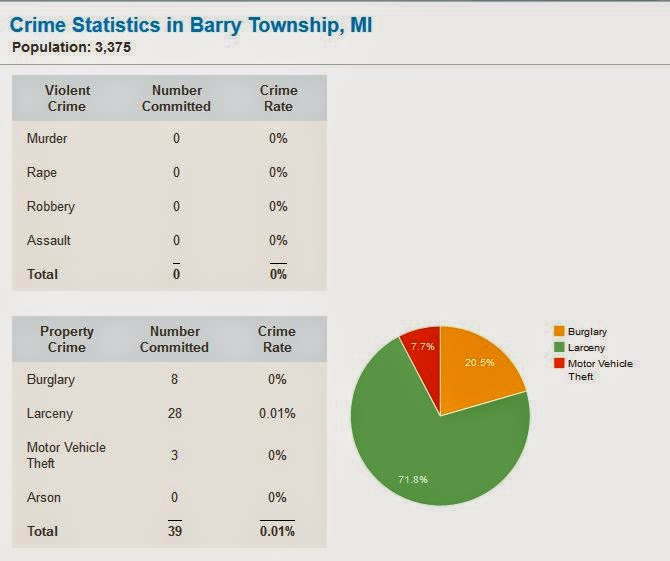
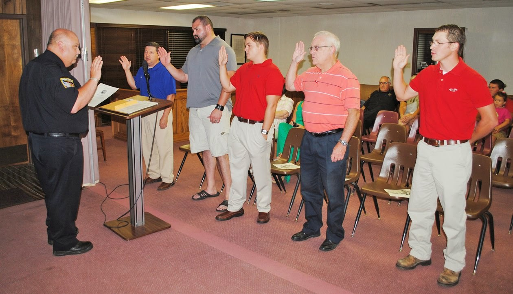

Victor Pierce
bears a resemblance to notorious death-cult leader Jim Jones, which is a tragic
accident of nature. He also deeply imbibed the authoritarian Kool-Aid
ladled out by the Homeland Security State, and force-fed it to the residents of
Barry Township, Michigan, the tiny and unfortunate village where Pierce was
employed as Chief of Police.
Like the Rev.
Jones, Pierce demanded that everyone within the area of his claimed authority
partake of the divinely inspired vision he has received.

To be more
specific, Pierce was providentially deposited in Barry Township to steel its
torpid citizenry against the day when Jihadists, school shooters, drug lords,
and perhaps even killer robots descend upon the village in an outpouring of apocalyptic
fury. Sure, this hasn’t happened – but it could
happen, in the same sense that a convergence of atmospheric anomalies could cause the skies to rain
artichokes.
Pierce will have to preach his vision in a different part of the vineyard: On August 7, he resigned from his post in response to a peaceful uprising from the ungrateful citizens of the township, which is now looking for another police chief. They would be much better off disbanding the entire department and liquidating its assets, which include combat-grade vehicles provided by the Pentagon.
Like many other
police chiefs drawing paychecks in irenic little towns across the nation – Ken
Geddes, the stalwart sentinel protecting Preston, Idaho, comes to mind –
Pierce liked to pretend that his placid resort town nestles against a
slumbering Vesuvius of violence: “We don’t just walk in and say this is
Mayberry, so nothing is going to happen in Mayberry. That’s how officers get
killed…. I’ve been to a number of officers’ funerals, you don’t know what will
happen in the heat of the moment.”
Pierce, who adorned the walls of his office with posters for 1980s-vintage action films like
“Lethal Weapon,” “RoboCop,” and “Cobra,” cast himself in the role of the
heroic outsider determined to take the risks and make the tough calls necessary
to defeat an implacable enemy. Barry Township allowed him to indulge his
vibrant fantasy life at taxpayer expense in a risk-free environment.
The township is
a “bedroom community” of about 3,700
people where crime is
all but unknown and the police department – as far as official reports attest –
has never solved a case.
Yet the BTPD, which has four full-time
officers and operates out of a one-room headquarters in nearby Delton, was
provided with four armored vehicles (including two APCs) through the
Pentagon’s 1033 program. As part of what Pierce calls a “visionary balance
for the community,” the chief trained and recruited a “reserve force” of
nearly 40 officers, none of whom is a state-certified peace officer (a status
regarded as important by people who believe the state can license people to
carry out aggressive violence).
Pierce enjoyed thirty years of reasonably
stress-free employment with the Battle Creek Police Department before replacing former BTPD Chief
Marshall Kik, who met a violent end – by his own hand.
Five years ago, Barry County Sheriff’s deputies found
Kik’s lifeless body
outside the BTPD station. The deputies, responding to a request from a 911
dispatcher for a welfare check on the chief, discovered that he had
killed himself with a self-inflicted gunshot. An investigation by the Barry
Township Council discovered that the chief had maintained a secret checking
account into which he illegally deposited the proceeds from vehicle inspection
fees.
The Hastings Banner, a local weekly that is
one of the few newspapers in the country that actively investigates municipal
corruption, reports that nearly $130,000 was paid out of that account over the
course of three years. All of the checks were signed by Kik, including one for
nearly $20,000. The Township Board, while insisting that “the great majority of
funds placed in this account were expended for valid police purposes,” admits
that “the keeping of such an unauthorized and undisclosed bank account by
Police Chief Kik was improper.”

At the time of
his suicide, Kik – who had been chief for nearly 30 years – had turned over his
administrative responsibilities to another officer named Chris Martin. The official story was that he was on
“medical leave,” a claim
difficult to sustain in light of subsequent disclosures.
A source with knowledge of secretive dealings between Kik and the Township board told the Banner that the chief had been quietly demoted because he “had not submitted some reports properly.” If the paperwork was not completed and turned in by June 1, 2009, the board would convene a meeting “to discuss disciplinary actions.” Only one of the necessary reports had been completed prior to Kik’s suicide.
A source with knowledge of secretive dealings between Kik and the Township board told the Banner that the chief had been quietly demoted because he “had not submitted some reports properly.” If the paperwork was not completed and turned in by June 1, 2009, the board would convene a meeting “to discuss disciplinary actions.” Only one of the necessary reports had been completed prior to Kik’s suicide.
The source
reported to the Banner that “Kik had
left a note for his fellow officers” discussing concerns that the department
would be shut down, and that the township would enter into a contract with the
Barry County Sheriff’s Office.
“Don’t let the sheriff
take over the police department,” Kik reportedly exhorted his colleagues in his
suicide note. “He is trying.”
Then-Sheriff Dar
Leaf acknowledged that he had offered to provide coverage to Barry Township, as
he had others in the county, but denied that he was trying to take over for the
BTPD because the village “can’t afford the sheriff’s services.” Nor was it in
need of government law enforcement “services” of any kind.
 |
| Click to embiggen. |

At the time of
his death, Kik was the township’s sole full-time
police officer. Given
the near-absence of crime apart from Kik’s embezzlement scheme, Barry Township
not only couldn’t afford a police department, but would have been better off
without one.
Rather than shutting down the BTPD station and discharging the
reserve officers, the township hired Pierce in late 2009. Pierce, who at the
time was 51, assumed the office of chief in Barry Township practically the same
day that he began collecting his pension from Battle Creek.
Many men, upon
reaching a certain age, seek to hold “the subtle thief of youth” at bay by
undergoing cosmetic surgery. Others buy motorcycles. Some who retain their
marketability may have extra-marital affairs. Pierce, whose unevenly – and
unconvincingly -- dark coiffure testifies to his vanity, decided to create a
fantasy camp for over-aged adolescents who wanted to play the role of costumed
badasses. Thus he created a corps of unpaid and untrained “reserve officers”
drawn from other cities as distant as Kalamazoo.
This kind of
thing is harmless fun, until it isn’t. The fun ended early in the morning on
May 10, when two of Pierce’s cosplaying volunteers took part in the gang
beating of local businessman Jack Nadwornik, the owner of Tujax Tavern and a
member of the county planning commission.
Nadwornik, who
was celebrating his 58th birthday, had just closed his bar and –
given that the streets were vacant and nature’s call was compelling – relieved
himself in the corner of an empty parking lot next to his business. Within
seconds two BTPD vehicles were on the scene, disgorging one full-time officer
and two fanboys in full costume. Within a few minutes Nadwornik’s hand was
broken, his body was covered with bruises inflicted with a club, and he was facing a felony
charge that carries a two-year prison sentence.

The assailants
claimed that the victim “resisted” their attack, as
he has every right to. The only objective eyewitness to the event insists
that the cops – including the two role-playing wannabes – lied about the
incident, as
cops are trained to. The incident catalyzed what had previously been
inchoate concerns over Pierce’s empire-building.
Earlier this year
the Michigan State Police was asked to investigate complaints against Pierce
and his police force. Their preliminary report concluded that there was no
evidence of criminal conduct, and that predictable finding allowed Pierce to
claim vindication. Most of his “customers,” however, remain dissatisfied. Many
residents have complained about contrived traffic stops that have grown into
opportunistic searches – one of which involved thirteen officers (most of whom
were reservists), a drug-sniffing dog, and the hours-long detention of a weary
woman who was simply trying to get home from work.
At a public
meeting earlier this week that was attended by practically everyone in Barry
Township, citizens demanding that Pierce be fired submitted a petition
containing one thousand signatures. The Town Council has yet to act on that
demand. However, the 34-member reserve corps was suspended at the request of
the Michigan Township Participating Plan, which insures the PTPD.
Victor Pierce is
not the only small-town police chief in Michigan seeking to build an empire with the help
of uncertified “reserve officers.”
Earlier this
year, reports the Michigan Free Press,
the sate Township Participating Plan “canceled its coverage this year for Oakley, a village in Saginaw County, after the police chief there brought in
100 unpaid and uncertified auxiliary officers, some from as far away as metro
Detroit, to patrol a town of 290.” Another insurance carrier moved to fill that vacancy, however,
which means that there will be no discontinuity in the valuable services its
police department provides – which allegedly include retaliating against the employer of a
local woman who rejected the unwanted advances of police chief Robert Reznick.
After Aileen
Gengler complained to her boss, Dennis Bitterman, about Reznick’s behavior, the
tavern owner contacted the chief and asked him to lay off his waitress.
According to a lawsuit filed by Bitterman, the chief “exploded in anger” and
used his reserve officers to scrutinize the tavern owner’s business. Bitterman and his wife say that “aggressive” patrols of their
establishment have cost them customers.
Four subsequent
lawsuits have been filed by the Bitterman family, all of them dealing primarily
with refusals by the village council and police department to comply with laws
governing open meetings and freedom of information requests. Among the details withheld
by the police department were the names of its reserve officers – which means
that the reserves are, by strict definition, a secret police force in a
flyspeck-sized community with
no documented criminal activity.

It was the number
and frequency of the lawsuits that led to the decision by the Township
Participating Plan to withdraw coverage from Oakley. Scores of Oakley residents have carried
out public protests demanding that Resnick be fired. As was the case in Barry
Township, the municipal government has ignored the objections of the public it
supposedly serves.
In this case, the chief was given a vote of support by
the village council, and
his “reserve” program continues to operate – and as is the case elsewhere in
the state, the reserve officers are not subject to
official oversight by anyone
other than their police chief.
Pierce's job seemed secure because of support from the local punitive populist
demographic, which is composed primarily of retirement-age Fox News consumers
and employees of the government school system.

According to Delton
resident Jim Cook, the chief “has basically started a scare campaign within the
… church, senior community, and school system…. Using Sandy Hook, al-Qaeda, and
`Jesus told you’ as [his] primary campaign…. [He has] convinced a small group
of people that without [him] and [his] posse, they will not be able to walk the
town without the risk of being raped, kidnaped, molested, or killed.”
The same strategy
–preaching civic redemption through the imposition of a garrison state – was
used by Chief Todd Stovall in Paragould, Arkansas. In December 2012, Stovall, who had created a large corps
of “reserve officers,” announced his intention to place the tiny
city under martial law.
Although Paragould has a high burglary rate, violent crime
is all but non-existent there. But like Victor Pierce, Todd Stovall considers
himself a visionary ordained by Providence to head off the apocalypse.
“We’re going to do it to everybody,” the chief insisted. “Criminals don’t like being talked to” by the police.
The same is true of any individual possessing a particle of self-respect, of course.
“We’re going to do it to everybody,” the chief insisted. “Criminals don’t like being talked to” by the police.
The same is true of any individual possessing a particle of self-respect, of course.
“The fear is
what’s given us the reason to do this,” insisted Stovall as he announced that
he was going to deploy officers “in SWAT gear [with] AR-15s around their [sic]
neck.” During a town hall meeting at the West View Baptist Church, Stovall
explained that “If you’re out walking, we’re going to stop you, ask why you’re
out walking, check for your ID…. I’ve got statistical reasons that say I’ve got
a lot of crime right now, which gives me probable cause to ask what you’re
doing out.”
 |
| Stovall swearing in members of his reserve force. |

Stovall appears
to be the sort of person who has never owned a library card, which is why his
understanding of “probable cause” appears limited to a phrase or two he heard
while watching television. He has a more comprehensive understanding of the key
law enforcement concept, “officer safety,” and an instinctive ability to
recognize a public relations disaster. Accordingly, in early 2013 he discontinued a series of town hall
meetings that were
planned to unveil his martial law program, citing “public safety concerns.”
The only
discernible threat to public safety was that posed by Stovall’s little Praetorian
Guard, which includes an officer who was held personally liable for assaulting
a suspect named Jacob Thomas Earls, and several others who were rebuked by
lying in court and falsifying records
concerning that crime.
“My officers
didn’t lie,” grunted Stovall when asked why he hadn’t discharged them from his
force after their lies had become an indelible – and expensive -- part of the
town’s legal history.
Wherever a police
department exists, the seeds of a gestapo have been planted. Tiny towns across
the country are afflicted with police chiefs who see themselves as heroic men
of destiny, and no police department is so small that the Pentagon will turn down
its request for battlefield-grade weapons and vehicles – thereby inviting the
involvement of the kind of people who will help those malignant seeds blossom. Outraged residents of Barry Township have trimmed away one of the branches; now they need to strike at the root.
Go here to listen to, or download, my most recent Freedom Zealot podcast.
Please follow me on Twitter.
Please follow me on Twitter.
Dum spiro, pugno!
18 comments:
"The Hastings Banner, a local weekly that is one of the few newspapers in the country that actively investigates municipal corruption, reports that nearly $130,000 was paid out of that account over the course of three years. All of the checks were signed by Kik,"
Missing "r" in "Kirk"
please disregard last - my bad, I'm seeing "r" where there was none
I originally succumbed to the same mental auto-correct error. I really appreciate your careful editorial scrutiny -- it's always best to have more than one set of eyes on my copy. :-)
Well, then I have to report this: The source reported to the Banner that “Kirk had left a note for his fellow officers”
LLAP
Y'see what I mean?
Of course, Mr. Spock is the kind of guy who can immediately locate one tiny button on his console after the bridge lights go dim, so he has an inhuman advantage as a copy editor. :-)
Thank you for being the vanguard in this struggle, for having the courage and doggedness to stand up to this criminality. Because of you I shine a light on evil when I see it.
Excellent analysis of the police state fungi growing unnoticeably in tiny towns across Amerika.
http://www.examiner.com/article/democrat-sheriff-typifies-progressive-only-one-hypocrisy-on-guns
http://www.examiner.com/article/fla-department-of-law-enforcement-asked-to-verify-sheriff-s-gun-qualification
Check out these two hilarious stories about a Barney Fife type sheriff in Florida. A newspaper quoted him as saying no citizens should have an "assault rifle" and then the comedy really erupted. It turns out the sheriff had not bothered to qualify on the range in the last two years since he had taken office, but quickly did the next day after the newspaper report.
The newspaper also referenced a past range officer who was in charge of qualifications who said the sheriff was a danger on the range with unsafe gun handling and did not even qualify with the pathetic standards that exist, but that he signed off under duress because the sheriff signed his paycheck. The sheriff responded the next day by bragging about how he only missed 20 percent of the time with targets ranging from one to fifteen yards! That is hilariously inept and something I have literally taught a teenage girl to outperform on her first ever day of handling a glock, but I tend to doubt he even was able to do that. He is apparently very uncoordinated and horrible at shooting, which is why he did not qualify the last two years until the press forced him into it. I somehow doubt we will be seeing a video of this amazing performance!
The other day I made a comment that some seemed surprised about as far as how bad at shooting almost all cops are. This is exhibit A! Bragging about being able to only miss one out of five shots at fifteen yards on a large target is hysterical to anyone who has done any sort of formal training or who is just coordinated.
Not directly applicable to "Police Chiefs Gone Wild," but you and your other readers may appreciate this:
http://www.toonhole.com/2014/08/requesting-backup/
http://waronguns.blogspot.com/2014/08/were-only-ones-proper-enough.html?m=1
Sorry, I should have included this link, too. This involved two deputies who fired 19 shots at close range at what turned out to be undercover cop. Luckily, no one was hit because the cops have beyond pathetic shooting ability.
The sad joke is, these nut jobs inflict their serious mental health issues on the general public. The people in the general public that refuse to go along with this lunacy are many times charged with criminal crimes. The courts put these people through hell because the courts treat such nonsense as the real deal and not what it is, criminal conduct by criminals posing as peace officers.
There are two states in the country that have elected types in office because they have mastered the art of scaring old people, FL and AZ. Now that the baby boomers are old and aging, its opened up the whole country to the scam artist. Good term on, "retirement-age Fox News consumers and employees of the government school system" and not forgetting the tax feeders as well.
Jeez Will, when will dumbed-down amerikans realize that any authoritah that thug-cops have is supposedly limited as an agent of the very people who grant them a small amount of their OWN legitimate natural-right authority as the contract principles? Halloween-costumed praetorian authoritah derives from US, their hirers, employers, and bosses! The 1st thing people want to do is go hire yet another blue-clad, State-violence-monopoly porker! Instead of using their own greater sovereign authority to use their own self defense weapons, arbitration, security, adjudication services provided by consensual market providers and neighbors, who don't hide behind State 'Oz' curtains, and are subject to scrutiny of the competitive marketplace!
Hey Mark Chaffee: that "requesting back-up" cartoon is hilarious and sadly true.
This article is full of lies. In FACT, 95% of the people complaining about the police force do NOT live in Barry Township. They have Delton zip codes, but live in the townships of Hope, Prairieville, etc. I looked them all up and would be glad to provide them to you. Most of the other 5% have criminal records in numerous townships. The REAL news (wwmt.com) got a copy of the central dispatch tapes regarding the Nadwornik incident. The police were TALKING to Mr. Nadwornik UNTIL HE TOOK A SWING AT THEM. I'm sorry, but the recording of the incident trumps anyones "claims". As far as the "small town with no crime", that is BS, too. Barry Township is a very violent community. Dispatch (which is run by the COUNTY, not Victor Pierce, or the township), dispatched 351 calls in May including the Nadwornik case. Many of those are domestic violence, theft, assault, etc. Funny thing, I bet YOU call the police when someone is beating the shit out of you. I also bet that you don't 'approve' this to be in the comments. What SHOULD happen is those officers should sue everyone that spreads inflammatory lies for libel. Then this shit would stop.
Funny thing, I bet YOU call the police when someone is beating the shit out of you. I also bet that you don't 'approve' this to be in the comments
You're demonstrably wrong on both counts, which means you're presumptively wrong on several others. :-)
It says a great deal about your priorities that you investigated the background of the people who were complaining about the police, and in doing so discovered that a negligible fraction of them had records of some kind. I'll warrant that you've not subjected the members of ex-Chief Pierce's posse to similar scrutiny.
As to the claim that the central dispatch tapes documented that Nadwornik "took a swing" at the cops who were pestering him, the excerpts provided by the "real news" outlet consist of two requests for backup, a report that Nadwornik was in custody, and the derisive remark that he wasn't having trouble breathing "while he was fighting."
Typically, police describe anything other than abject submission as "fighting." Trying to parry the unwarranted strikes, kicks, or baton blows being inflicted by a cop is described as "fighting," as is trying to escape a choke hold. There have been cases in which citizens have been charged with "assaulting an officer" for withdrawing from contact.
In the article above, I noted that the MSP investigation had "cleared" the BTPD, which means, in substance, that the state police accepted the village department's version of the contested events.
It is always useful, I suppose, to be reminded that the job of a "real news" outlet is to act as stenographers for government agencies, especially the police.
http://www.wwmt.com/news/features/top-stories/stories/I-Team-uncovers-new-information-days-after-police-chief-39-s-resignation-12862.shtml#.U-u5W2MWp-w
Typing every few words in all caps really helps make your case. It doesn't make you look crazy at all!
Are you going to she me for libel now? Or check my criminal background because I complained?
And FYI: unlike 95 percent of police officers, Mr Grigg actually has fighting skills, so he won't be getting the shit beat out of him like cops regularly do.
And also FYI: you mention 351 dispatches for 911 calls, but anyone familiar with 911 centers knows that most of the calls are nonsense and nothing that ends up being serious at all. Why don't you research that for us!
Molly got shut up pretty quickly! Maybe she is trying to sue us all?
Post a Comment